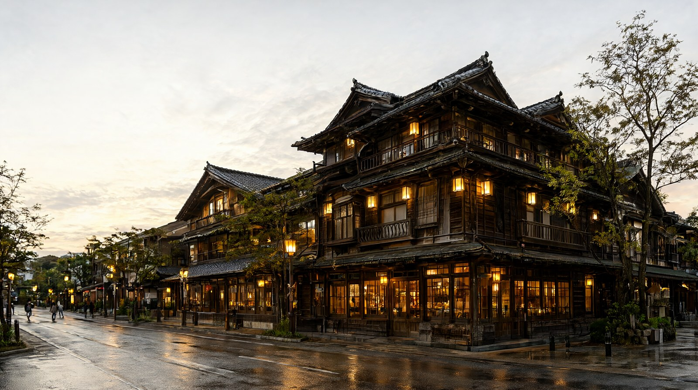

요금 코스, 개보수 완료 여부, 아이 요금, 대기 확인법을 가족 기준으로 정리
도고온천 본관 이용 가이드
핵심 요약
- 본관은 2019년 1월에 시작한 보존 수리가 2024년 12월 20일에 끝나 지금은 전체가 정상 영업 중입니다 (도고온천 공식 사이트).
- 가장 싼 코스는 가미노유 1층입니다. 12세 이상 700엔, 2~11세 350엔입니다. 우리 가족(성인 2 + 초등 1)은 1,750엔(약 14,900원)입니다.
- 가미노유 1층과 이층 휴게석은 예약이 안 됩니다. 대기가 길면 현장에서 정리권을 받고 전화 호출을 기다리는 방식입니다.
- 2026년 휴관일은 12월 1일(화) 하루입니다. 연말 대청소 때문이며 나머지 날은 연말연시에도 영업합니다 (마쓰야마시).
- 문신 규정은 공식 문서에서 찾지 못했습니다. 비공식 안내는 허용이라고 하지만, 해당되는 분은 방문 전에 전화로 확인하세요.
본문
1. 개보수는 끝났나
- 보존 수리 공사는 2024년 12월 20일에 끝났습니다. 공사 중 일부만 열던 시기와 달리 지금은 전 코스를 이용할 수 있습니다 (도고온천 공식 사이트).
- 이전에는 열지 않던 방을 전세실 2개(시라사기노마, 히쇼노마)로 새로 열었습니다 (도고온천 공식 사이트).
2. 요금 코스와 시간
12세 이상이 어른, 2~11세가 어린이입니다. 모두 세금 포함이며 2026-10-22에 공식 사이트에서 확인했습니다. 원화는 100엔=853.02원 기준 약입니다.
| 코스 | 포함 내용 | 어른 | 어린이 | 영업 / 입장 마감 | 이용 시간 |
|---|---|---|---|---|---|
| 가미노유 1층 | 가미노유 입욕만 | 700엔 (약 6,000원) | 350엔 (약 3,000원) | 6:00~23:00 / 22:30 | 60분 |
| 가미노유 이층 휴게석 | 가미노유 입욕, 이층 휴게, 대여 유카타, 차와 다과 | 1,300엔 (약 11,100원) | 650엔 (약 5,500원) | 6:00~22:00 / 21:00 | 60분 |
| 다마노유 이층 휴게석 | 가미노유와 다마노유 입욕, 대여 유카타와 수건, 차와 다과, 우신덴 자유 관람 | 2,000엔 (약 17,100원) | 1,000엔 (약 8,500원) | 6:00~22:00 / 21:00 | 60분 |
| 다마노유 삼층 개인실 | 가미노유와 다마노유 입욕, 삼층 개인실 휴게, 우신덴 자유 관람 | 2,500엔 (약 21,300원) | 1,250엔 (약 10,700원) | 6:00~22:00 / 20:30 | 90분 |
| 삼층 전세실 | 방 1팀 요금 + 인원별 요금. 방에는 욕조 없음 | 방 6,000엔(시라사기노마) 또는 3,000엔(히쇼노마) + 1,300엔 | 650엔 | 정해진 시각 시작, 1일 5팀 | 90분 |
| 우신덴 관람(가이드 동반) | 황실 전용 욕실 관람 | 500엔 | 250엔 (6~11세) | 9:00~17:00 / 16:30 | 30분 |
- 도고온천 3관 주유 티켓: 어른 1,440엔, 어린이 680엔. 본관 가미노유 1층, 쓰바키노유, 아스카노유 1층 욕실을 1번씩 쓸 수 있고, 판매일과 다음 날까지 2일간 유효합니다 (도고온천 공식 사이트).
- 우리 가족 3인 합계(성인 2 + 초등 1): 가미노유 1층 1,750엔(약 14,900원), 이층 휴게석 3,250엔(약 27,700원), 다마노유 이층 5,000엔(약 42,700원), 삼층 개인실 6,250엔(약 53,300원), 3관 주유 3,560엔(약 30,400원).
- 12번째 생일이 지난 아이는 어른 요금입니다. 초등 6학년이라도 만 12세면 어른 요금이니 확인하세요.
3. 아이와 입욕 규정
- 요금 구분은 2~11세 어린이, 12세 이상 어른입니다. 2세 미만 요금과 입욕 가능 여부는 공식 자료에서 확인하지 못했습니다. 확인 필요.
- 본관에는 가족탕이 없고 가미노유, 다마노유 모두 남녀 탕이 나뉩니다. 이성 부모와 함께 들어가는 아이의 상한 나이는 공식 자료에서 찾지 못했습니다. 확인 필요.
- 수영복과 속옷을 입고 들어가는 것은 거절됩니다. 예외는 수술 흉터를 가리는 전용 입욕착(500엔, 본관 1층 매점 판매)입니다 (도고온천 공식 사이트).
- 샴푸, 린스, 바디워시와 드라이어는 갖춰져 있고 드라이어는 무료입니다. 신발장과 탈의실 사물함도 무료입니다 (도고온천 공식 사이트).
4. 문신 규정
- 공식 사이트와 마쓰야마시 안내에서 문신 관련 문구는 찾지 못했습니다. 입욕착 외의 옷을 입고 들어가는 것만 명시적으로 거절합니다.
- 비공식 안내(문신 허용 온천 소개 사이트, 2026년 3월 확인 표기)는 본관 전체에서 허용이라고 적습니다. 비공식이므로 공식 확인 전에는 단정하지 마세요. 확인 필요.
5. 수건과 대여
| 항목 | 값 | 비고 |
|---|---|---|
| 대여 수건 | 110엔 | 매점 판매. 가미노유 1층 코스는 수건이 제공되지 않습니다 |
| 대여 큰 수건 | 320엔 | 같은 매점 |
| 대여 유카타 | 코스에 포함 | 가미노유 이층 휴게석부터 |
| 수건과 큰 수건 | 코스에 포함 | 다마노유 이층 휴게석 등 (공식 안내 기준) |
| 본관 오리지널 수건 | 360엔 | 기념품 |
| 사물함 | 탈의실 사물함 무료 | 큰 캐리어는 유료 짐 보관 서비스 (도고온천 공식 사이트) |
- 개인 수건을 가져가도 됩니다. 음식 반입은 삼가 달라는 안내입니다.
- 결제는 신용카드, 교통카드, QR 결제가 됩니다 (도고온천 공식 사이트).
6. 혼잡과 대기 확인법
- 공식 사이트 첫 화면에 코스별 대기 시간이 실시간으로 올라옵니다. 2026-10-21 18:00 무렵에는 가미노유 1층이 0~15분 대기로 표시돼 있었습니다 (도고온천 공식 사이트).
- 대기가 길면 매표소 옆 기기에서 코스, 인원, 연락처를 입력하고 정리권을 받습니다. 대표 1명만 받아도 되고, 전화가 오면 15분 안에 와야 하며 넘기면 자동 취소됩니다 (도고온천 공식 사이트).
- 정리권이 모두 나가면 "본일 안내 종료"가 표시되고, 그때는 정리권을 가진 사람만 입장합니다 (도고온천 공식 사이트).
- 시간대별 혼잡 통계는 공식 자료에서 찾지 못했습니다. 일반적으로 개장 직후 이른 아침이나 폐장 1~2시간 전이 덜 붐비는 편이라고 하지만 추정이며 확인 필요.
7. 가족 이용 팁
- 아이가 어리면 가미노유 1층 60분 코스가 부담이 적습니다.
- 휴식까지 원하면 가미노유 이층 휴게석(3인 3,250엔)이 가성비가 맞습니다. 유카타와 차와 다과가 포함됩니다.
- 탕이 남녀로 나뉘므로 아이를 어느 쪽 보호자가 맡을지 미리 정하고, 나오는 장소도 정해 두세요.
- 3관 주유 티켓은 같은 이틀 안에 쓰바키노유와 아스카노유까지 갈 때만 이득입니다. 본관 하나만 가면 개별 요금이 낫습니다.
- 신발은 입구 신발장에 넣고 들어갑니다. 가져온 짐은 탈의실 사물함을 쓰세요.
- 비 오는 날에도 실내 시설이라 일정이 바뀌지 않습니다.
8. 주변 상점가 동선 (예시)
도고온천역에서 본관까지 걸어서 약 3분입니다 (도고온천 공식 사이트). 역과 본관 사이에는 상점가가 이어지며 길이는 약 250m라는 비공식 안내가 있습니다.
| 순서 | 할 일 | 메모 |
|---|---|---|
| 1 | 도고온천역 도착 후 상점가 걷기 | 간식과 기념품 구경. 가게별 영업시간은 확인 필요 |
| 2 | 본관 입구에서 대기 시간 확인 | 길면 정리권을 받고 상점가로 돌아가 기다림 |
| 3 | 입욕 60분 | 가미노유 1층 또는 이층 휴게석 |
| 4 | 이층 휴게석에서 차와 다과 | 코스에 포함된 경우 |
| 5 | 저녁은 상점가 식당 | 가격과 예약 여부는 확인 필요 |
- 도고온천역까지는 시내 전차를 씁니다. 공항에서는 리무진 버스로 약 40분입니다 (도고온천 공식 사이트). 전차는 JR마쓰야마역 앞에서 약 25분, 마쓰야마시역에서 약 20분입니다 (이요테쓰 공식).
확인 필요 항목
- 문신 규정의 공식 문구 (비공식 안내만 확인).
- 2세 미만 요금과 입욕 가능 여부, 이성 부모와 함께 들어가는 아이의 나이 상한.
- 시간대별 혼잡 통계와 평일 대기 시간.
- 삼층 개인실과 전세실의 정확한 포함 서비스(예약 사이트에서 확인).
- 상점가 식당과 가게의 영업시간, 가격.
확인 방법과 출처
- 요금표, 시간, 대기 현황: 도고온천 공식 사이트 본관 페이지, 첫 화면 (2026-10-22 확인).
- 이용 방법과 정리권: 도고온천 공식 사이트 이용의 손잡이(안내) 페이지.
- 휴관일: 마쓰야마시 도고온천 휴관일 안내 (2026년 9월 1일 갱신).
- 타월, 사물함, 반입 금지, 입욕착: 도고온천 공식 사이트 자주 묻는 질문, 마쓰야마시 자주 묻는 질문 (수건 값은 공식 본관 페이지의 110엔, 320엔 기준).
- 문신: 비공식 안내 (문신 허용 온천 소개 사이트, 온천 안내 사이트).
- 환율: 한국수출입은행 매매기준율 100엔=853.02원 (2026-10-16 고시, 허브 글 값을 재사용).
공식 출처
- https://dogo.jp/onsen/honkan
- https://dogo.jp/howto
- https://dogo.jp/faq
- https://dogo.jp/
- https://www.city.matsuyama.ehime.jp/kanko/kankoguide/kankomeisho/dogoonsen/info/kyukanbi.html
- https://www.city.matsuyama.ehime.jp/kanko/kankoguide/kankomeisho/dogoonsen/faq.html
같이 보면 좋은 글
- 마쓰야마 여행 가이드
- 마쓰야마공항에서 도고온천까지 (myj-airport-to-dogo)
- 마쓰야마 3박 4일 느린 일정 (matsuyama-3n4d-slow)
- 마쓰야마에서 우치코 당일치기 (matsuyama-uchiko-daytrip)